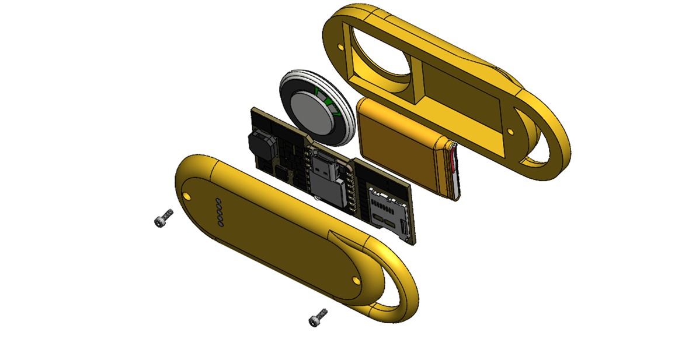

Panoptès AI, le traducteur vocal temps réel

Analyse du besoin
Objectif : concevoir un traducteur vocal ultra-réactif, sous forme de pendentif, connecté à ChatGPT via Bluetooth Low Energy (BLE). Le dispositif doit offrir une autonomie de deux jours, intégrer un haut-parleur suffisamment puissant, présenter un design simple et élégant, et ne pas dépasser un coût de production de 40 € en série de 100 unités.
C’était le défi ambitieux que posait le projet Panoptes AI, développé dans le cadre d’une preuve de concept à présenter lors d’appels à projets. L’objectif : obtenir des financements pour structurer une équipe autour de la vision du client (confidentielle à ce stade).
Les principales difficultés rencontrées :
- l’autonomie énergétique, malgré un échange vocal constant via BLE,
- la connectivité avec ChatGPT pour la traduction,
- le budget de développement restreint,
- la miniaturisation, indispensable à la portabilité.
Prototypage
La première phase de R&D s’est appuyée sur un ESP32, choisi pour son excellent rapport fonctionnalités/prix. En plus de gérer le BLE, sa connectivité Wi-Fi laisse envisager une future version autonome. Une carte électronique sur mesure a été développée en intégrant directement un module ESP32 XIAO. Ce choix présente plusieurs avantages :
- réduction des coûts pour les faibles volumes de production,
- facilité d’assemblage en série,
- simplification des démarches réglementaires, grâce à la certification FCC et CE du module.
Optimisation du design
Le système de recharge, initialement envisagé par induction, a été remplacé par un connecteur magnétique compact, plus économique, tout en préservant l’élégance du design.
Un peu de conception 3D, quelques vis, une batterie de 600 mAh, un haut-parleur, un microphone, un codec audio, et le système devient pleinement fonctionnel.
Une fois le design retenu, nous avons modélisé la version finale en 3D en vue d’une industrialisation.

Une impression 3D rapide en SLA a permis de valider l’intégration physique et l’encombrement du dispositif, ouvrant la voie à une pré-série de validation.
Préindustrialisation
Le design final vise un aspect métallisé, tout en conservant un poids réduit, un coût bas et la transparence aux ondes Bluetooth. L’usinage métallique étant exclu, la solution retenue repose sur une impression 3D avec finition “vacuum electroplating”. Cette technique assure une bonne adhésion du revêtement métallisé, à un coût maîtrisé.
Plusieurs rendus 3D photoréalistes ont été proposés au client pour l’accompagner dans le choix final du design.
Conclusion
Le projet Panoptes AI réunit tous les ingrédients d’un produit innovant :
- un design épuré,
- une technologie portable et connectée,
- un concept simple,
- un fort potentiel d’usage.
Ce projet a relevé des défis à la fois électroniques, mécaniques et logiciels — un véritable challenge multidisciplinaire.
Le système sera prochainement présenté sur Kickstarter. Restez connectés !
Merci à John pour sa confiance tout au long de cette aventure.